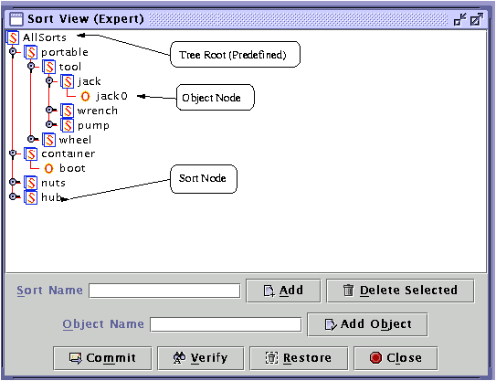

GIPO User Manual - SORT EDIT
SNAPSHOT:
-

-
PURPOSES:
-
Create sorts.
-
TYPICAL PROCEDURE OF USING SORT:
-
1. click on the tree node in order to create it's sublevel
sort/object.
-
2. type string text into the text box "Sort name", then click
add button to add the new sort to the sort tree.
-
3. repeat procedure 1 and 2 will create as many sort as the
user wants.
-
4. after clicking on the tree node, type an object name in
the text box "Object Name", the click on the button "Add Object" to add
this new object to the sort tree.
-
GENERAL FUNCTIONS
-
5. sort/object can be moved to the other branch in the
tree window by drag and drop.
-
6. sort/object can be removed by first selecting in the tree
then pressing the "Delete Selected" Button.
 back
to the user manual front page
back
to the user manual front page